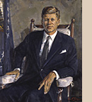

|

John F. Kennedy (1917-1963) Thirty-fifth President (1961-1963)
When an assassin's bullet cut short John Kennedy's presidency in November 1963, the country experienced a collective sense of loss that it had not known since the death of Lincoln. But the grief was not so much inspired by a long litany of presidential accomplishments as it was an expression of what Kennedy had come to represent. To be sure, his administration could claim notable triumphs in foreign policy, including its successful face-off with the Soviets over the presence of missiles in Cuba. Its support for the civil rights movement had, moreover, contributed significantly to a climate that would soon give birth to landmark legislation promoting racial equality. The main source of grief over Kennedy's death, however, was the eloquence and idealism that he had brought to his presidency and that made him, in the eyes of many, the embodiment of this country's finest aspirations.
Based on an oil sketch for which John F. Kennedy posed in 1962, this portrait
underscores the youthful vitality that was such an important part of Kennedy's
charisma. But his health was never as robust as it seemed. Among his recurring
ailments were back difficulties that were the source of frequent and severe pain.
William Franklin Draper (1912- ) |